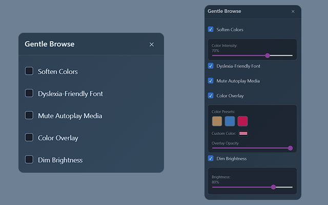

Gentle Browse Chrome Extension
A fully functional Chrome extension I coded from scratch to provide sensory relief for users with autism, migraines, and sensory processing issues
The Extension Interface
The clean, accessible interface I designed and coded for instant sensory relief
Project Overview
After talking to friends who struggle with sensory overload while browsing, I realized there wasn't a good solution that addressed multiple sensory issues at once. So I built Gentle Browse a. Gentle Browse is a Chrome extension that I coded entirely from scratch to give users instant control over their browsing environment.
The Problem
People with autism, migraines, dyslexia, and other sensory sensitivities face constant discomfort online. Bright colors, auto-playing videos, and hard-to-read fonts can turn simple web browsing into an exhausting experience. Most existing solutions only tackle one issue at a time.
My Solution
A comprehensive Chrome extension that I developed to address multiple sensory needs simultaneously. Users can soften colors, switch to dyslexia-friendly fonts, mute autoplay media, add color overlays, and dim brightness. All of these tasks can be completed with simple toggles in an accessible interface.
User Research & Insights
What Users Told Me
"The dyslexia font makes a big difference but I haven't found any good plugins for that recently."
"My sensory issues attack with migraines and anxiety; I just started working a very corporate standard 9-5 and staring at a computer screen for 8+ hours while wearing blue light glasses is driving me insane. Like even putting the brightness at the lowest is still not enough UGH"
"I don't often experience overstimulation online but when I do get irritated it is usually from automatic start videos or audio. Like trying to locate something and having audio playing about whatever nonsense that makes it hard to focus on what I am looking for"
Key Insights
- Users need multiple accessibility features, not just one
- Autoplay media is a major source of frustration and distraction
- Even minimal screen brightness can be too intense for some users
- Dyslexia-friendly fonts are in demand but hard to find
- Corporate workers especially need sensory relief during long screen sessions
Features I Built
Soften Colors
Reduces color saturation across web pages to minimize visual intensity and strain
Dyslexia-Friendly Font
Instantly switches to OpenDyslexic font designed specifically for easier reading
Mute Autoplay Media
Prevents videos and audio from auto-playing and mutes them by default
Color Overlay
Adds customizable color tints to dim and soften the entire screen
Dim Brightness
Lowers overall page brightness for reduced glare and eye strain
Quick Enable All
One-click activation of all calming features for instant relief
Development Process
1. User Research & Problem Definition
Interviewed users with sensory sensitivities to understand their pain points and existing workarounds
2. Feature Planning
Prioritized features based on user feedback and researched Chrome Extension capabilities
3. Technical Architecture
Designed the extension structure using manifest v3, content scripts, and popup interface
4. Core Development
Coded the JavaScript functionality, CSS injection, and media control
5. UI/UX Design & Implementation
Created an accessible, intuitive interface that users can operate even during sensory overload
6. Testing & Iteration
Tested across different websites and browsers, gathering feedback from target users
Technical Implementation
Key Technologies
- JavaScript: Core functionality and DOM manipulation
- Chrome Extension API: Browser integration and permissions
- CSS Injection: Dynamic styling and visual modifications
- Content Scripts: Page-level modifications and media control
- Local Storage: User preference persistence
Development Challenges
Cross-Site Compatibility
Ensuring the extension works reliably across different websites with varying CSS structures
Performance Optimization
Minimizing impact on page load times while providing real-time visual modifications
Accessibility Focus
Designing for users who may be experiencing sensory overload when they need to use the extension
Chrome API Limitations
Working within browser security constraints while maximizing functionality
Impact & Results
User Feedback
- The combination of features addressed more needs than single-purpose extensions
- Corporate workers appreciated being able to customize their work browsing environment
- The quick enable feature became the most-used function for instant relief
Technical Achievements
- Successfully developed a fully functional Chrome extension from scratch
- Created an accessible UI that works during sensory distress
- Built persistent user preferences across browsing sessions
What I Learned
This project taught me that coding for accessibility isn't just about following guidelines, it's about understanding how people actually experience distress and building solutions that work in those moments. The technical challenge of manipulating web pages in real-time while maintaining performance was incredibly rewarding to solve.
Future Enhancements
Continued iteration from feedback and more featurers. I'd also love to expand beyond Chrome to other browsers.